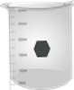
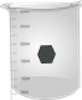
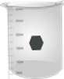

' ' ' ' '
0.06 mM


 


1. Prepare an aqueous 1 x 10-3 M 2-nitroaniline solution. Weigh out 0.0138 g of material and dissolve in 100 mL water. This is used as stock solution.
2. From the above stock solution, prepare five different concentrations of 2-nitroaniline solutions (for example, 0.0001 M, 0.00008 M, 0.00006 M, 0.00004 M, and 0.00002 M).
3. Switch on the computer and the instrument powers; wait for 30 minutes for ‘warm-up’ of the instrument.
4. One can select light sources (UV and visible), scan speed, %transmittance or absorbance display mode, wavelength range of interest, etc. in the instrument via a PC.
5. Take two clean and dry quartz cuvettes with a given path length (here 1 cm).
6. Fill up one cuvette with sample blank (distilled water in the present case) and the other cuvette with 2-nitroaniline solution. Begin with the lowest concentration. (Why?)
7. Place the sample blank in the reference holder and the sample in the sample holder.
8. Run the absorption scan.
9. Similarly spectral runs are done for all the other samples. Order of analysis should be from lower to higher concentration. Every time one should rinse (twice or thrice) the cuvette taking a small portion of the (solvent first and then the) solution to be measured.
10. Click on the Data tab to collect all data.
11. Plot absorbance vs. wavelength for all concentrations.
12. Determine the wavelengths of maximum absorbance (λmax) and corresponding absorbance for each concentration and prepare a table containing these data.
13. For each λmax divide the absorbance by the corresponding concentration and determine ελ values (remember the path length = 1 cm). Then calculate average ελ’s.
14. Construct calibration plots by plotting absorbance versus concentration for a given λmax. Thus one constructs three calibration plots for three peak positions of 2-nitroaniline.
15. Determine the slopes of the calibration plots and hence the respective ελ values for three peak positions.
16. Compare average ελ values with the ελ values determined from the calibration plots.
17. Calculate the molecular cross-sections for light absorption, σ (in cm2) and oscillator strengths, fnm.
18. Discuss your results.
